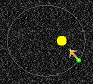

The planet should be moving in a circular orbit with constant speed. Observe that the acceleration is not zero and that it points to the sun at all times. The acceleration is not zero because the velocity of the planet is changing direction.
Play the motion. The following image shows the planet and its acceleration at one instant during the planet's motion around the sun.

Observe that the acceleration is changing both magnitude and direction during the planet's revolution around the sun, but that it is always directed towards the sun.